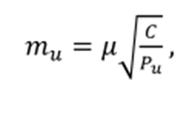
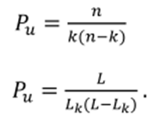

13-амалий иш Мавзу: Баландлик инженерлик-геодезик тармоқларни барпо этишда нивелирлашнинг ўзига хослиги
Шаҳарлар, гидроузеллар, йирик саноат мажмуалари худудларида инженер – геодезик тармоқларни
барпо этишда тегишли класс нивелирлаш ишлари I, II, II ва IV класс нивелирлаш тавсиялари ва
талаблари
кўрсатмалари асосида бажарилади.
Инженерлик иншоотларини қуриш ва улардан фойдаланиш жараёнида махсус баландлик
тармоқларини
барпо этиш ва аниқ инженер – техник нивелирлашларни амалга оширишга эҳтиёж пайдо бўлади.
Аниқ инженер – техник нивелирлашининг қўйидаги асосий усуллари
мавжуд:
Аниқ инженер – техник нивелирлашининг қўйидаги асосий усуллари
мавжуд:
1. Қисқа визир нурли геометрик нивелирлаш усули;
2. Гидростатик нивелирлаш усули;
3. Микронивелирлаш. Геометрик нивелирлаш усулида 10 – 15 м масофада жойлашган иккита
нуқта
баландликлари фарқини (нисбий баландликни) 0.03 – 0.05 мм ўрта квадратик хатолик билан
аниқлаш мумнкин [26].
Бир неча юз метр масофада жойлашган нуқталар баландлиги фарқи 0.1 – 0.2 мм аниқликда
ўлчанади.
Бундай юқори аниклик айрим хатолик манбалари таъсирини камайтириш бўйича қўйидаги
чораларни кўриш натижасида таъминланиши мумкин:
1. Нивелирлаш учун асбобларни диққат билан танлаш Hi, Ni007 ва Ni002 нивелирлари юқори
аниқликни таъминлайди.
2. Ўлчов микроскоплари ёрдамида микрометр головкаси бўлак қийматини диққат билан
аниклаш
3. Асбоб баландлигини бир текисда ўзгартириш ва асбобнинг
иккита горизонтида нивелирлаш имконини берадиган махсус нивелир
таглигини ясаш.
4. Махсус визирлаш нишонларидан фойдаланиш.
5. Махсус иссиқдан муҳофаза қилувчи ғилофдан фойдаланган ҳолда нивелирни иссиқлик
таъсиридан ҳимоя қилиш, Мураккаб шароитларда инженер – геодезик ишларни бажаришда
геометрик нивелирлаш ўрнига қисқа, 100 метргача визирлаш нурли
тригонометрик нивелирлаш усули қўлланилади. Тригонометрик нивелирлаш қуйидаги турларга
бўлинади:
а. Бир томонлама нивелирлаш, бунда битта қиялик бурчаги ёки зенит масофаси ўлчанади;
б. Икки томонлама нивелирлаш, бунда чизиқнинг иккала учи нуқталарининг қиялик
бурчаклари ёки
зенит масофалари бир вақтда ўлчанади;
с. Уртадан нивелирлаш, бунда теодолит икки нуқта ўртасига
ўрнатилади.
Назарий ҳисоблар кўрсатиши бўйича, барча услубиятларга амал қилинганда, тригонометрик
нивелирлаш аниқлиги III класс натижаларига яқин бўлиши исботланган.
Қиш ойларида рефракциянинг кучли таъсирини ҳисобга олиб тригонометрик нивелирлашни
бажариш
тавсия этилмайди.
Қисқа нурли тригонометрик нивелирлаш тоғли жойларда топографик
съемка асосини яратишда, ундан ташқари иншоотлар деформациясини
кузатишда кўпроқ қўлланилади.
Тенглаштирилган нивелир тармоқлари аниқлигини баҳолашда тугун нуқта ўрта квадратик
ҳатолигини қуйидаги ифода орқали хисоблаш мумкин.

бу ерда и - вазн бирлиги ўрта квадратик хатолиги; Pu - тугун нуқта вазни; С –
коэффициент.
Бошланғич ва к пунктлар орасидаги нисбий баландликнинг тенглаштирилган қийматининг Рвазни
қуйидагича ҳисобланади:

Бу ерда n – барча йўл бўйича станциялар сони, L- чизиқ узунлиги, kбошланғич нуктдан k
пунктгача станциялар сони, Lk - йўл узунлиги.